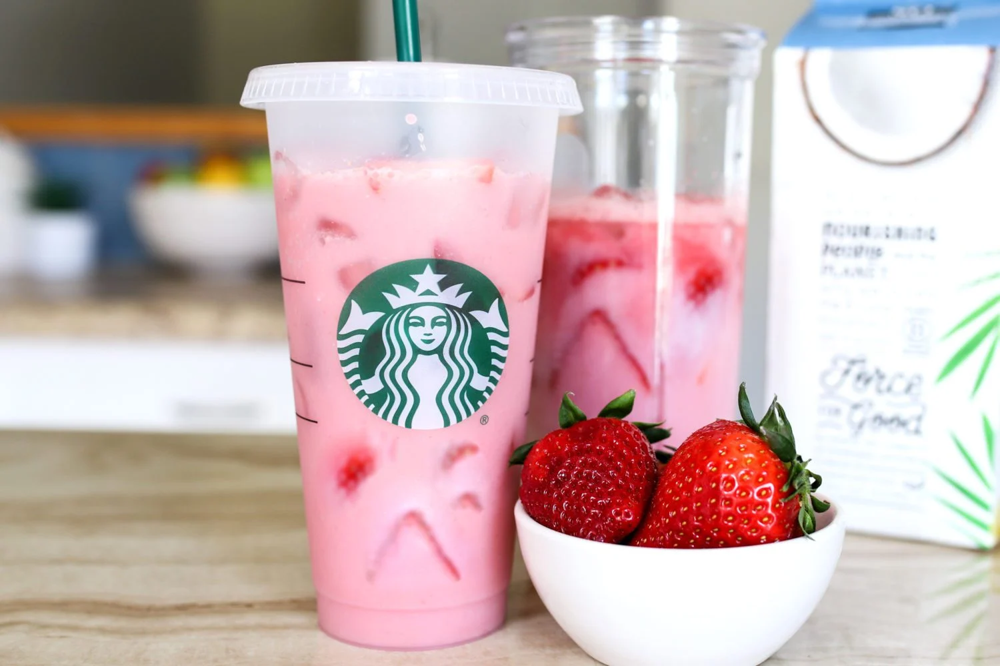

Starbucks Pink Drink Copycat Recipe

A light and refreshing beverage that features the sweet flavors of strawberry acai and coconut
INGREDIENTS
- 1 ½ cup strawberries (sliced)
- 2 cups sweetened coconut milk (chilled)
- 1 cup water
- 1 tbsp Starbucks VIA instant refreshers very berry hibiscus powder
- 1 ½ tbsp sugar
- ice
Vanilla Cold Foam (optional)
- 1 cup non-fat milk
- 2 pumps vanilla flavored syrup
INSTRUCTIONS
- Slice your strawberries and place 1 cup in a blender with the water, very berry hibicus powder and sugar. Blend on high until combined.
- Set the rest of the strawberries aside for now.
- Add 1 cup of coconut milk and a handful of ice to each cup.
- Divide your strawberry blended mixture evenly into each cup and stir.
- Top with remaining sliced strawberries!
- (optional) Combine non-fat milk and vanilla syrup and with an immulsion blender, blend until foamy. Add to the top of each drink and serve!